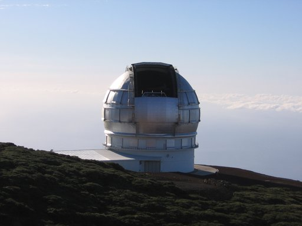
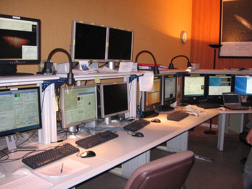

What is a support astronomer?¶
If you came to this page by chance, you might be wondering what the hell is a support astronomer. In the very first post of this new blog, I give you all the details.
If you are in a hurry, you can go directly to the end to find out. For those that have a couple of minutes, you may have seen pictures like this at some point:
This is a picture of one of the largest telescopes in the world, the GTC. These large telescopes are, in fact, a large lab with some of the most advanced technologies in the world. Not only the telescope is a unique piece, but each telescope has several last generation instruments, built only for one of these telescopes. Hundreds of engineers and scientists work in their construction.
Once these giants start operations, an excellent team, capable to obtain the maximum return of them, is required. The final goal is to provide the maximum amount of information about the faintest objects in the Universe to astronomers worldwide. The working team is composed by a group of specialists in several areas (optics, mechanics, electronics, software, cryogenics,…) and, obviously, astronomers. Some of these astronomers are called support astronomers.
What exactly does a support astronomer?¶
Astronomers working in a large telescope have several functions, but few times have the opportunity to perform observations for their own investigations. The main reason is that telescope time is granted not only to those astronomers that work at the telescope, but also to all the astronomers in the scientific community. When astronomers need some data to develop their investigations, they follow a procedure adopted by all the large telescopes, including the most famous telescope in the world, the Hubble Space Telescope.
The process begins by looking for the telescope that best fits their needs. All the telescopes in general, but specially the large ones, have web pages dedicated to answer all the questions that an astronomer may have in order to evaluate whether their observations can be done with that telescope. This part is rather important for the continuity of a telescope, since a telescope without observing requests is very unlikely to get funding. The work of a support astronomer starts precisely here, since they are normally in charge of keeping the content in these web pages up to date. The main reason is that support astronomers know very well all the details of the telescope where they work. In addition, they have the scientific background to know what another astronomer may need to know when looking for a telescope to observe.
The process continues by applying for time in a particular observatory. There is usually a committee in charge of evaluating all the observation requests and dictate what are the requests with larger scientific interest. This committee is called Time Allocation Committee (TAC) and is formed by astronomers not involved either with the telescope or the observing proposal. At the large telescopes, there are usually lots of requests and, hence, being granted for time in a large telescope requires a highly relevant scientific case. In fact, in the largest observatories, like ESO, is rather usual to grant between one in three and one in five proposals (ESO annual report).
Once an observing proposal is granted, the detail of the observations has to be defined. It is rather common, at this stage, that astronomers have doubts about the best observing strategy or what is the best instrumental configuration, among other things. It is important to remark that it is very difficult, or impossible, that observers know all the details of all the telescopes that they are going to use in their professional career. It is at this stage that support astronomers start to develop their main task: helping other astronomers to get the maximum return of the telescope time that has been granted to them. So, they answer all the questions that observers may have.
Two things can happen in the next step: either the observer goes physically to the telescope, or observations are done in service mode. In the former case, when observers arrive at the telescope, they will likely find a control room (where the telescope is operated), like this one:
At the largest observatories, there is a person (the telescope operator) in charge of operating the telescope, but in other cases the support astronomer (or even the observer) are the responsible to deal with everything that can be seen in the picture shown above (control room at La Silla observatory). In order to get the maximum scientific return of the telescope time, the support astronomer explains all the required details that the observer may need along the night.
In the later case, when observations are done in service mode, the support astronomer is (with, sometimes, the help of the telescope operator) the responsible to perform the observations and to send the obtained data to the observers. In fact, it is becoming rather usual that observations are done in service mode and, hence, support astronomers are behind an important fraction of the data obtained in the largest telescopes worldwide.
Summarizing¶
As explained above, support astronomers have the responsibility to provide all the support needed by the observers of the largest telescopes in the world to obtain the maximum return of their observing time. This is the reason because they are called support astronomers.
Update on May 16, 2021: Link to the GTC instrumentation page modified.
Update on May 16, 2021: Hubble Space Telescope no longer accepts proposals. Link to the Hubble Space Telescope submission of proposals was removed.
Update on May 16, 2021: The AAT no longer provides support astronomers for the majority of programs awarded time on the AAT. Sentence and reference to AAT removed.
Update on May 16, 2021: Section explaining the reason for this web page was removed as it provided no information and most of the contents can be directly obtained from the home page.